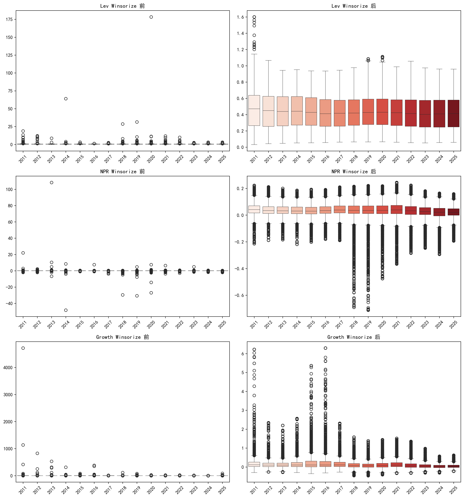
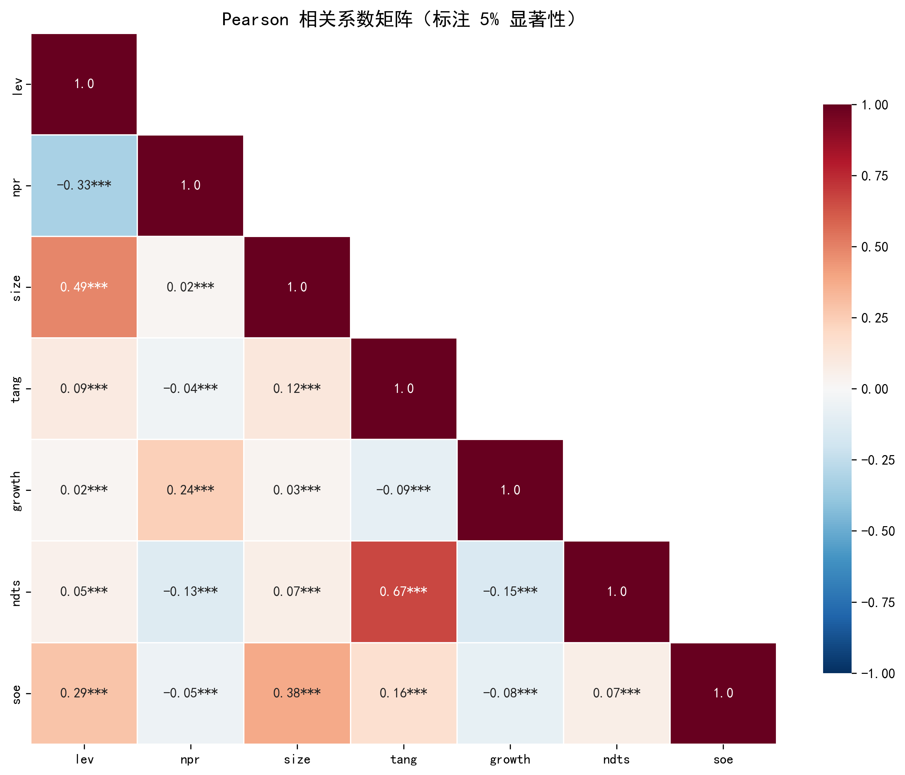
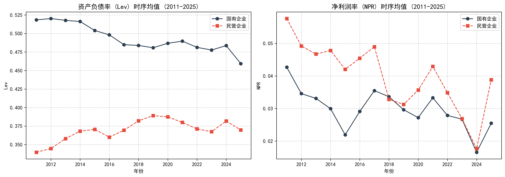

| Obs. | Mean | Std. Dev. | P25 | Median | P75 | Mean (SOE) | Mean (Non‑SOE) | Diff. Signif. | |
|---|---|---|---|---|---|---|---|---|---|
| lev | 38385 | 0.4166 | 0.2024 | 0.2535 | 0.4082 | 0.5652 | 0.4929 | 0.3728 | *** |
| npr | 38385 | 0.0339 | 0.0624 | 0.0118 | 0.0350 | 0.0644 | 0.0295 | 0.0365 | *** |
| size | 38385 | 22.2903 | 1.3593 | 21.3373 | 22.0769 | 23.0359 | 22.9715 | 21.8996 | *** |
| tang | 38385 | 0.2079 | 0.1557 | 0.0867 | 0.1752 | 0.2958 | 0.2404 | 0.1893 | *** |
| growth | 38385 | 0.1454 | 0.3295 | 0.0030 | 0.0760 | 0.1863 | 0.1106 | 0.1653 | *** |
| ndts | 38385 | 0.0252 | 0.0159 | 0.0133 | 0.0223 | 0.0338 | 0.0265 | 0.0244 | *** |
3 数据与变量
3.1 数据来源
所有财务和公司特征数据均来自 CSMAR（中国股票市场与会计研究数据库），时间跨度为 2010–2025 年（最终保留 2011–2025 年，因计算增长率需滞后一期）。宏观货币供应量 M2 数据同样取自 CSMAR 宏观经济模块。
3.2 变量定义
| 变量类型 | 变量名 | 定义 | 说明 |
|---|---|---|---|
| 因变量 | Lev | 总负债/总资产 | 剔除 >1 样本 |
| 核心解释变量 | NPR | 净利润/总资产 | 反映盈利能力 |
| 控制变量 | Size | ln(总资产) | 企业规模 |
| Tang | 固定资产净值/总资产 | 有形资产比例 | |
| Growth | (总资产_t - 总资产_{t-1})/总资产_{t-1} | 成长性 | |
| NDTS | (折旧+摊销)/总资产 | 非债务税盾 | |
| SOE | 国企=1，民营=0 | 产权性质 | |
| 宏观变量 | M2_growth | (M2_t - M2_{t-1})/M2_{t-1} × 100 | 交互固定效应专用 |
3.3 样本筛选流程
初始样本包含全部A股上市公司，按以下步骤清洗： 1. 剔除金融、保险行业（证监会行业代码 J 开头） 2. 剔除曾被 ST/*ST/PT 处理的公司全部年度 3. 剔除资产负债率 >1 的观测 4. 剔除关键变量缺失值 5. 保留 2011–2025 年
筛选后最终样本包含 4,357 家公司，38,385 个公司-年度观测值。
3.4 描述性统计
Table 3.1 报告了主要变量的描述性统计，并按产权性质分组。
注：所有连续变量均在每年 1% 水平上进行了双侧 Winsorize。显著性一列来自 t 检验，* p<0.1, ** p<0.05, *** p<0.01。
3.5 异常值处理 (Winsorize)
对 Lev、NPR、Tang、Growth、NDTS 在每年横截面上进行双侧 1% Winsorize。处理前后的箱型图对比如 Figure 3.1 所示，极端值得到了有效控制。

3.6 相关系数矩阵
图 Figure 3.2 展示了主要变量间的 Pearson 相关系数。NPR 与 Lev 显著负相关，初步支持优序融资理论；所有相关系数均低于 0.7，不存在严重的多重共线性。

3.7 时序趋势
图 Figure 3.3 分别描绘了 Lev 和 NPR 的年度均值趋势（分产权性质）。国有企业杠杆率整体高于民营企业，而净利率长期低于民营企业，进一步提示产权性质可能调节盈利‑杠杆关系。
